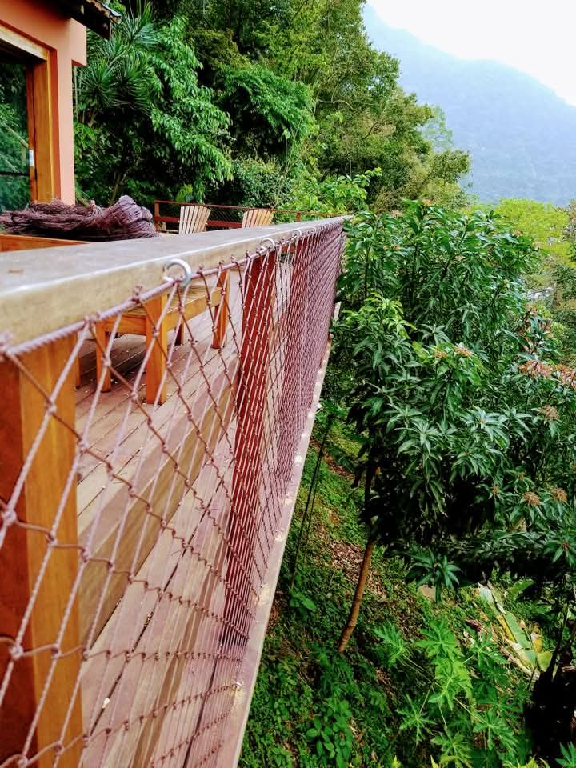
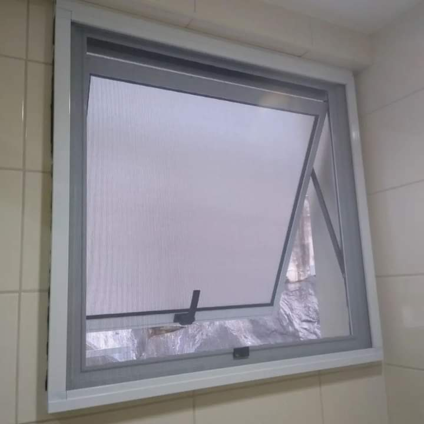
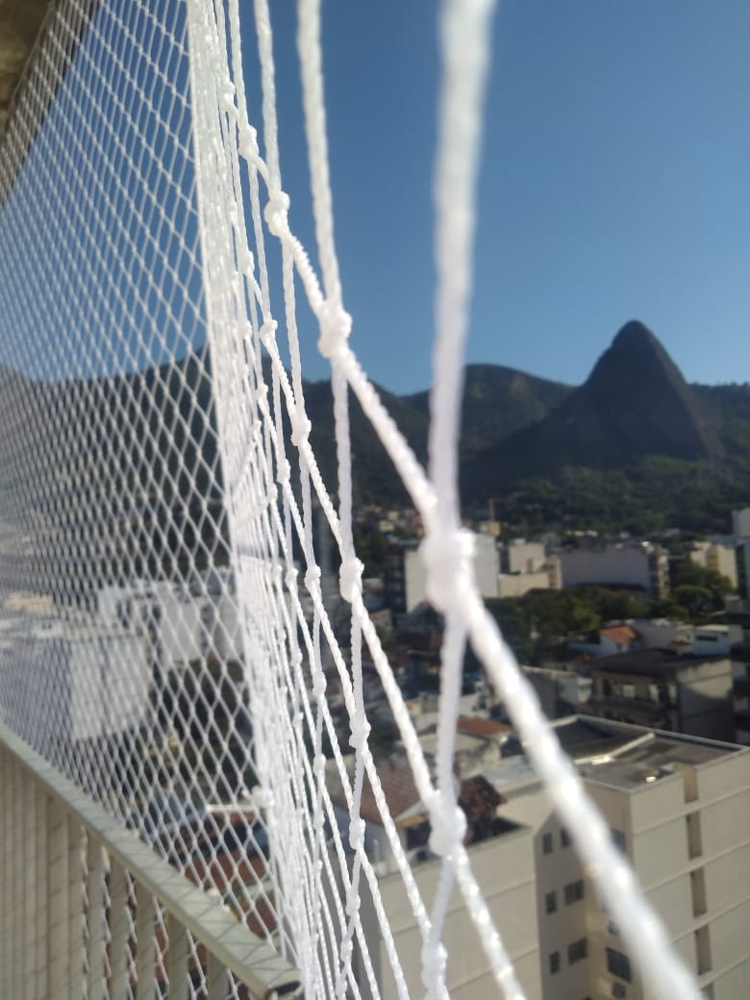
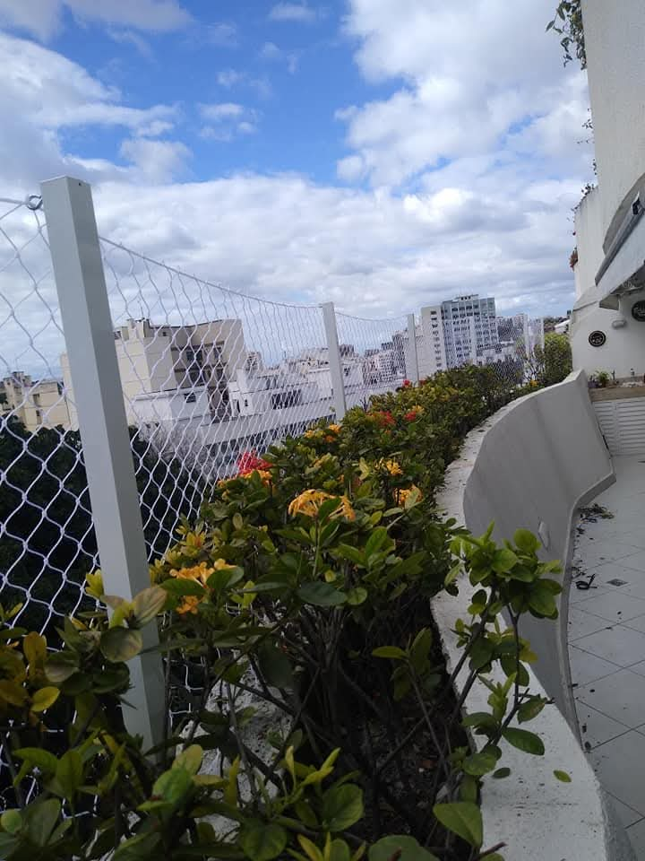
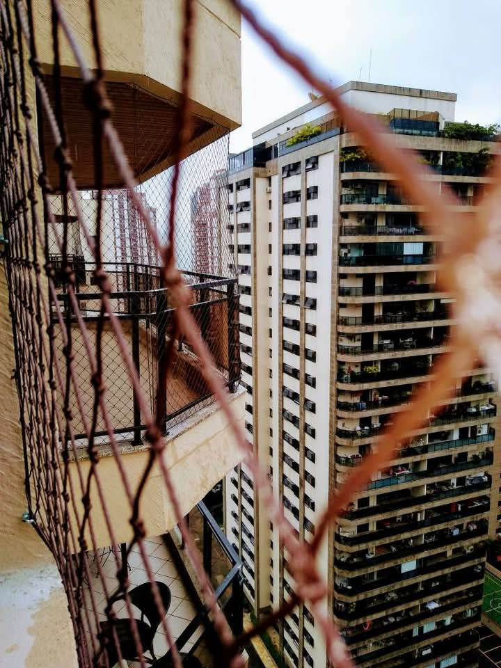
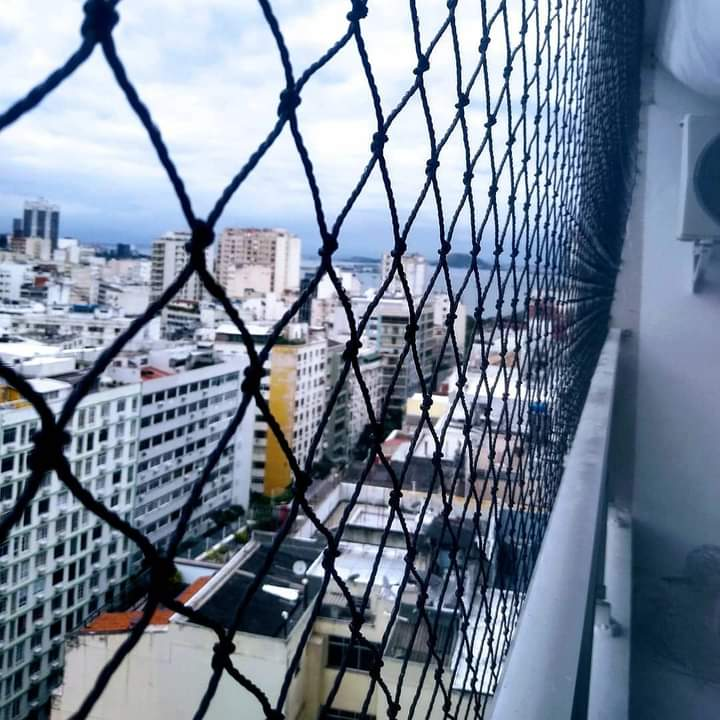
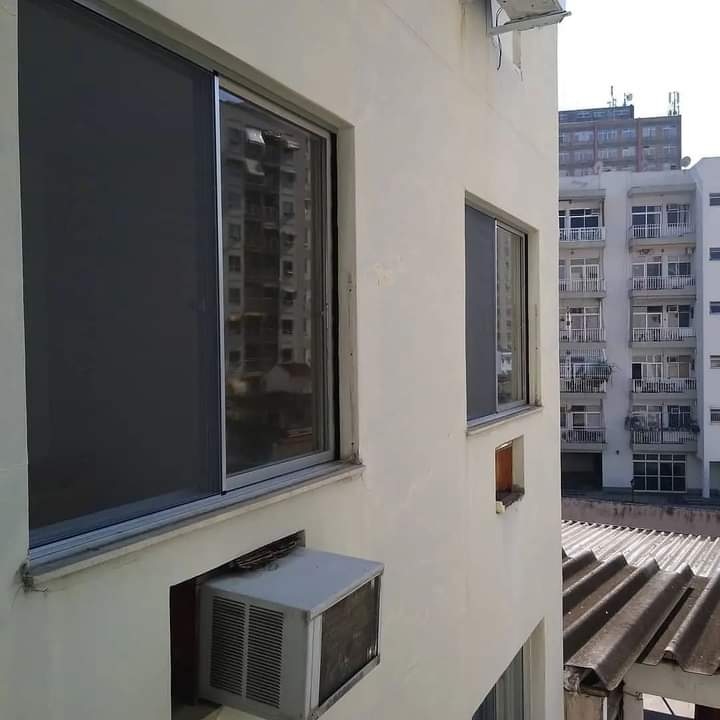
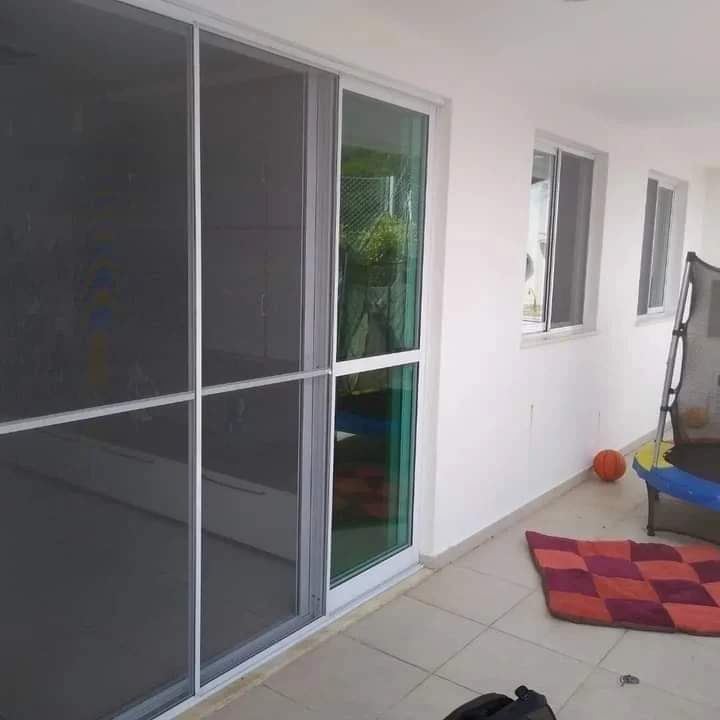
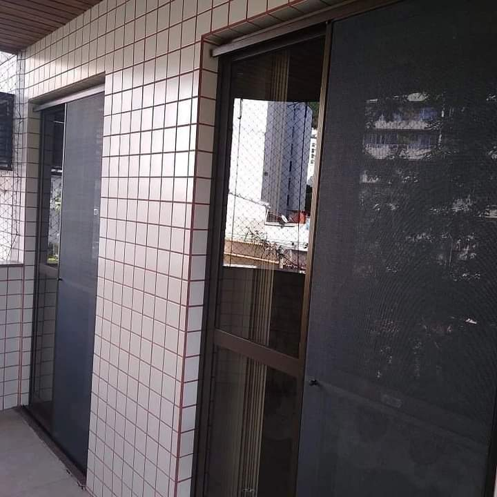
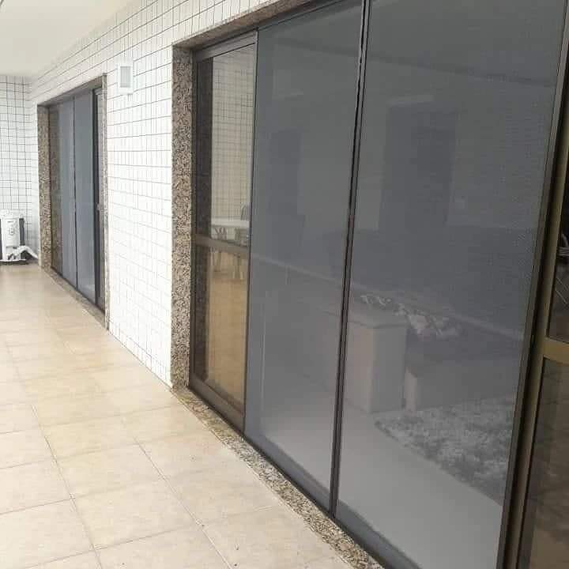

ESPECIALIZADOS EM REDES DE PROTEÇÃO E TELA MOSQUITEIRO
conforto, qualidade e proteção para sua casa.
orçamentos sem compromissos
profissionais habilitados
instalação imediata
varandas, janelas, terraços e escadas
NOSSOS SERVIÇOS

Redes de Proteção
Instalação de redes de proteção para janelas, varandas, escadas e áreas externas, garantindo segurança para crianças, pets e toda a família, com materiais de alta qualidade e acabamento profissional

Telas Mosquiteiro
Instalação de telas mosquiteiro sob medida, ideais para manter o ambiente ventilado e livre de insetos, trazendo mais conforto e bem-estar para sua casa.
TELA PROTEÇÃO




TELA MOSQUITEIRO




ENTRE EM CONTATO
Atendemos Rio de Janeiro e região.
Por que escolher a Adonay?
Trabalhamos com responsabilidade, qualidade e compromisso com a segurança da sua família. Utilizamos materiais resistentes, instalação profissional e atendimento direto, sem intermediários. Segurança, qualidade e atendimento direto com quem entende do serviço.
“Cuidamos da sua casa como se fosse a nossa.”
SOBRE NÓS
A Adonay é uma empresa especializada na instalação de redes de proteção e telas mosquiteiro, comprometida em oferecer soluções que garantem a segurança e o conforto do seu lar. Trabalhamos com materiais de alta qualidade e mão de obra especializada, assegurando durabilidade e eficiência em cada projeto.
Nosso objetivo é proporcionar tranquilidade para você e sua família, prevenindo acidentes e mantendo os ambientes livres de insetos. Valorizamos o atendimento direto e personalizado, entendendo as necessidades de cada cliente para oferecer soluções sob medida.
Escolha a Adonay para transformar sua casa em um espaço mais seguro e confortável. Estamos prontos para atender você com seriedade, dedicação e compromisso com a sua segurança.